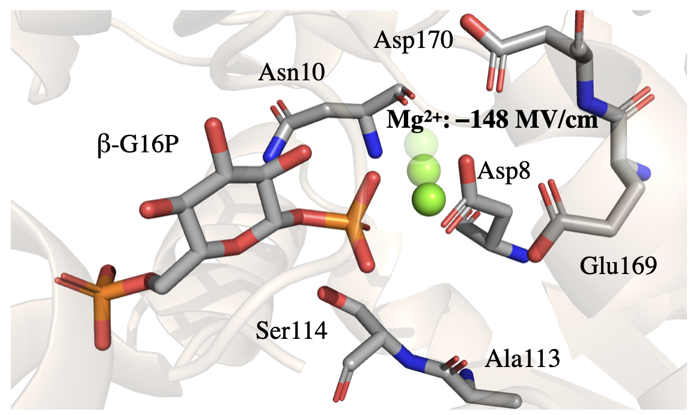

How does Asp10Asn disrupt β-phosphoglucomutase catalysis?
Electrostatic Preorganization and Mg²⁺ Positioning
- 12 simulations
- ~43k atoms each
- 3.0 μs total
Projected electric-field and GROMOS cluster analyses revealed Mg²⁺ mispositioning in the mutant and disruption of ground-state electrostatic preorganization.